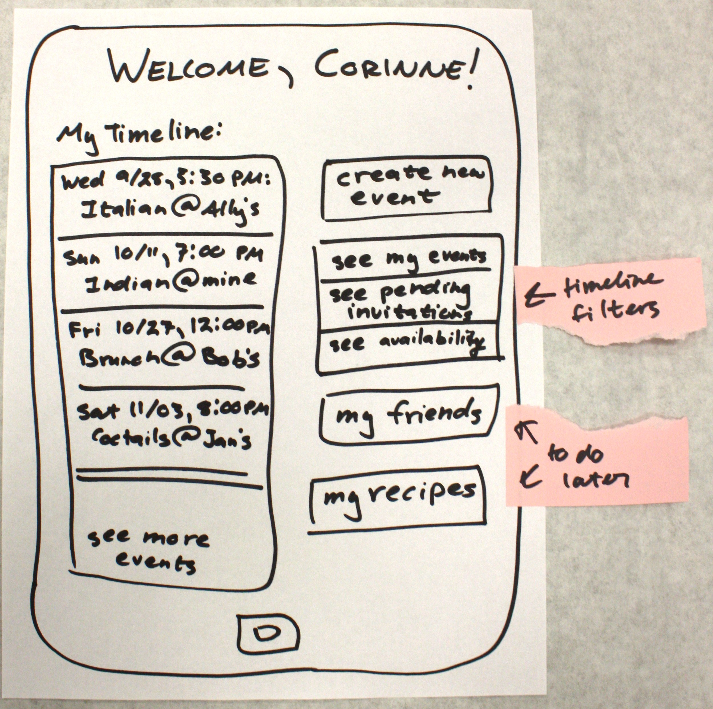

Fallera - Social Cooking
Human Factors Interface Design, Fall 2012

We are exploring the concept of social cooking—sharing the experience of cooking good food with friends. Many websites exist to help home cooks find recipes or learn new cooking techniques. A major issue facing people interested in cooking with others, however, is making the time to get together and cook. Oftentimes, groups cannot easily find a common time to cook and simply end up giving up on cooking socially. Tools such as electronic calendars and scheduling aids can help groups try to find a common time, but going through this process is more work than the average home cook would like to put in to cook socially. Our goal is to create an interface to facilitate social cooking for our users and to allow them to focus on what they care about—good food and good company—rather than the headaches of scheduling and meal planning.
Our team conducted a series of user interviews in order to determine the needs, values, and goals of our potential users.
Before starting the interviews, we modified a release form provided by our professors which introduced our interviewees to our project idea and the interview process. We asked users if they were comfortable being interviewed, and whether or not we could take photos. We made it clear that they would remain anonymous, while at the same time, what we learn from them would become publicly available on our website.
Guided by our course readings and experiences from UOCD, we wrote a list of interview questions, grouped into several categories. Since we are interested in learning about how users cook socially, we asked questions in the following categories:
We asked open-ended questions that encouraged users to expand upon their experiences and that would provide us with a thorough overview of their cooking and scheduling processes. We were curious to learn which aspects of the meal planning and scheduling process are particularly challenging, as well as which aspects of cooking users enjoy.
We relied upon our personal connections in order to interview a variety of people, including current Olin students, alumni, family acquaintances, professors, and members of local food sharing groups. Interviewees ranged in age from low-twenties to mid-fifties, and were a good balance of men and women. We interviewed a total of twelve users, both in person and over the phone, since some individuals interviewed live too far away to meet in person. We observed one user cooking in the kitchen, and another user showed us her Google documents of recipes, favorite cooking blogs, calendar with meeting requests, and Pinterest images of meals she enjoys cooking. We conducted two interviews in pairs, but given the time constraints, most of the interviews were conducted individually.
We interviewed individuals with a variety of outlooks on cooking. Some of the individuals, primarily college students or working adults who were not the primary cook in their family, cooked irregularly or for special occasions. These individuals look at cooking as a fun, occasional activity rather than a part of their daily routines. Others, primarily young working adults living on their own or serving as the primary cook in their family, cook daily or at least several times a week. They still enjoy cooking, but they have tighter time constraints and start with an idea of what they would like to make rather than how to bring friends into the process. We also interviewed individuals who we determined were not part of our user group because they do not enjoy cooking and therefore would not try to cook as a fun social event.
We found the following themes in common among the individuals we interviewed:
We identified the tasks our users perform that relate to our social cooking app and arranged them in the flowcharts shown above. These tasks involve the process users take to schedule a cooking event with friends, determine which recipes to follow, and obtain the necessary ingredients. We used colored stickers to label the tasks which pertain specifically to either Abby or Corinne, as well as numbered green stickers that rank the relative importance of the tasks.
After interviewing users, we grouped the individuals we interviewed based on common properties. The two properties we found most informative were frequency of cooking and amount of planning. We plotted the individuals we interviewed against these properties and identified two personas, Abby and Corinne. Each of these personas corresponds to a set of common properties among several interviewees. We then fleshed out the personas to make them realistic individuals for whom we could design. Corinne is our primary persona. This means that we will design specifically for Corinne, and by meeting her needs we will also meet Abby's needs.
We identified the goals of each user with regards to social cooking. These are presented with the description of each prersona. After we identified our personas, we created a set of scenarios for each of them. The scenarios describe how Abby and Corinne currently go about tasks related to social cooking. We used these scenarios in determining what issues need to be fixed in the process of social cooking. After completing our scenarios, we designed storyboards to address these issues via our interface designs.
Abby is a 19-year old sophomore at American University, studying political science. Her parents are from Honduras, so her food preferences are related to her heritage and her love of baked goods. Abby learned to cook with her mother, and her favorite activity was always baking Christmas cookies during the holiday season. When she arrived at college, Abby realized that baking reminded her of home, and it was a food-related activity she could do easily with non-perishable ingredients. She loves to share food that she bakes with her friends, and she often bakes with friends as a study break.
She wishes she had time to cook more often, but when she does have time she loves to experiment with variations on recipes. Abby does not have a car, so she is dependent on public transportation or walking to get to grocery stores or other off-campus locations. Because she does not have a job, Abby is on a limited budget and very conscious of ingredient costs. She also does not have much space to store ingredients, but her micro-fridge is always stocked with butter and eggs.
Abby lives in a co-ed dorm and sees her friends every day, either for classes or just to hang out. She is very health-conscious and tries to eat properly, despite her sweet tooth. Outside of her classes, Abby volunteers with ESL students at local high schools. She uses her computer mainly for class work and for social media. Abby particularly likes to spend time on her pinterest and facebook accounts, sharing her class work and baking efforts with her friends. She is a very social person and sometimes feels down after spending long periods of time working by herself on classwork.
We wrote two task scenarios for Abby which motivate our social cooking app. These scenarios illustrate the difficult experiences encountered by Abby when she attempts to bake with her friends in college.
In the first scenario, Abby decides what to bake based on the ingredients she has already, since obtaining ingredients is difficult for her due to limited transportation. In the second scenario, Abby tries unsuccessfully to schedule a time when she and her friend Beth can bake together.

Corinne is a single 25-year old from the suburbs of Providence, RI. She graduated from the Rhode Island School of Design two years ago with a bachelor’s degree in graphic design. After graduation, she started working for a small start-up outside of Providence, doing graphic design for their marketing materials.
She is a highly organized perfectionist, and this is expressed every day in her work. Corinne enjoys being social but is very busy with her job, so she sees her friends approximately once a week and mostly on the weekends. Corinne has her own small apartment with a kitchen that is cozy but large enough to accommodate another person working with her.
She is a good cook, but is still learning, and she enjoys experimenting with new techniques and recipes. Cooking is fun for Corinne, but when she gets home from work, she is tired and does not have time or energy to devote several hours to cooking dinner every night. Corinne finds most of her new recipes online through epicurious.com and allrecipes.com. The first time trying recipes, she usually follows them line by line, but she often experiments the second time around to suit the recipe more to her tastes.
Good food is a comfort to Corinne, and she considers herself a composer of food just as she is a designer of graphics. She does not cook with friends very often, but the main reason for that is the difficulty of scheduling times to cook and eat, particularly because her job sometimes keeps her in the office later than she expects. She wishes she could share her love of cooking (and the need to cook every night) with her friends on a more regular basis.
We wrote three task scenarios for Corinne which motivate our social cooking app. These scenarios illustrate the difficult experiences encountered by Corinne when she attempts to cook socially.
In her first scenario, Corinne must email back and forth to figure out which meal she would like to cook with her friend Deirdre. In addition, since Corinne has more freedom than Abby to choose recipes that require ingredients she does not have already, she must determine which ingredients she needs to buy or that her friends can bring. Finally, Corinne experiences the challenge of finding a time to cook that is free for both herself and her friend Deirdre.
We created storyboards to outline potential interaction designs. We tried to use a variety of approaches to the problem, including changing the platform and changing the focus of the application. In addition, we designed some of the storyboards specifically for Corinne and some specifically for Abby so that we could see how their priorities differ. The storyboards show how the user would interact with the application, and the accompanying descriptions justify our design choices.
This design is mostly focused on meeting Corinne’s needs, but there are some aspects that would appeal to Abby too. Since Corinne is very busy, scheduling a time to cook with friends is often challenging for her. In this design, Corinne can enter the days and times she is free, and the app will automatically find a time which works for both her and her friend. Corinne has a relatively small kitchen that can fit just one other person, so this design asks for the contact information of only one friend; however, there is the option to add more friends, which accommodates Abby’s needs as well. The design suggests several recipes for Corinne based on her food preferences. We learned from user interviews that too many options can feel overwhelming, so the design limits the recipe options to only the top five suggestions. Finally, since grocery shopping is one of the most difficult parts of the meal planning process for Corinne, this design attempts to alleviate some of the difficulty by providing a shopping list for Corinne. The shopping list includes the recipe’s ingredients that she does not already have at home, in addition to making ingredient substitutions in order to accommodate her food restrictions.
Corinne is a graphic designer who relies on her tablet for work and social connectivity. She also takes her tablet into the kitchen with her so she can follow online recipes without printing them out. When she visits the social cooking app, Corinne wants to see a high-level overview of what events are soon. The home page of the app shows a timeline on the left which gives Corinne the information she needs about each event: when, what, and where the event is. From the front page, Corinne can also filter this timeline to see only events she is hosting, incoming invitations, or events which coincide with her Google calendar. Corinne can also add a new event from the front page, manage her list of friends, and view her list of uploaded recipes.
The most important interaction for Corinne after the front page is the creation of a new event. When Corinne decides to arrange a social cooking event, she has an idea of what to make before she invites anyone. The first property she fills in for her new event is thus the cuisine she would like to make. Corinne can upload a recipe here to share with her friends, if she wishes. The second-most important consideration for Corinne in arranging social cooking is who she is inviting. The second property she fills in is thus the individuals she chooses to invite. Corinne has a relatively small group of friends she cooks with, so she does not need to put them in subcategories. The third and fourth properties Corinne fills out are the time and location of the event, respectively. Corinne proposes a time for the event because she does not have the time to spend surveying her friends to see what times might work. Rather, she proposes a time and can adjust that if necessary, but more likely she will hold the event with whomever can come.
The app we designed specifically for Abby focused on Abby's goal of spending time with her friends. When Abby decides to social cook, her first concern is with whom she would like to cook. Abby has many different social groups that she keeps active in such as church, college friends, friends from home, and soccer teammates. We designed the front page of the webapp to reflect this social dynamic. There are several groups on the page, each associated with a group of her friends. Any cooking event that Abby creates or is invited to is organized into one of these groups. Abby has control over which friends are in which group and which events are associated with which group, giving Abby the utmost control over who she decides to cook with.
While Abby wants to think about spending time with friends, she often has difficulties finding times that her and her friends are all available for, especially in a timely manner. Often times, she will exchange messages with her friends over the span of several days, not settling on a time until it is too late. When Abby clicks on one of her friend groups on the front page, a modal window appears covering the majority of the screen. In this window is a list of who is in the group and a large timeline clearly displaying any events associated with this group. The timescale is zoomable, allowing Abby to find social cooking opportunities in the next couple of days or weeks in advance. Clicking on a specific event will display relevant information such as who is going, what is being cooked, when, and where below the timeline. Each event also has a chat history associated with it, allowing for conversations between those invited about flexible date times, ingredients to bring, and what to make.
The idea is that people love beautiful pictures of food, so why not use them as a background image on a computer or phone?
A button in the bottom left can connect people with the food that they see.
Clicking quickly expresses a lot of interest. You can hold down to look at other foods. This is an unobtrusive way to bring people into the app.

Food as a Relaxing Distraction
You can see other foods up close, full-screen on your device.
This allows the user to really absorb the image. You can also click to express interest or swipe to look at another dish.
Mutual Interest
If both you and a friend express interest in a food, you will both be “invited”
to a cooking session.
Ingredient Coordination
If you express interest, the website will let you know what ingredients
are needed and coordinates teamwork to pick up ingredients. Allows for easy communication.
Touchscreen Flavoring of Food Images
This feature is more for Corinne, who is into visuals and puts effort into food. She can post pictures of her food and edit it in ways
that make use of a touchscreen surface. The food can be edited with colors to express flavors, such as spiciness with a saturation of the color red where it appears in the food. You can also add swipes of sparkles and fuzziness to draw attention to some parts and away from others.
Sharing The Experience
Corinne posts the food image to her “cookbook,” where people can see meals she’s made and meals she plans to make.
| Joe Gibson | Molly Grossman | Mandy Korpusik | Colby Sato | |
| User Interviews | 20 | 20 | 30 | 30 |
| Persona Creation | 25 | 25 | 25 | 25 |
| Website Development | 75 | 20 | 2.5 | 2.5 |
| Task Analysis and Scenarios | 25 | 25 | 25 | 25 |
| Story Boards | 25 | 25 | 25 | 25 |